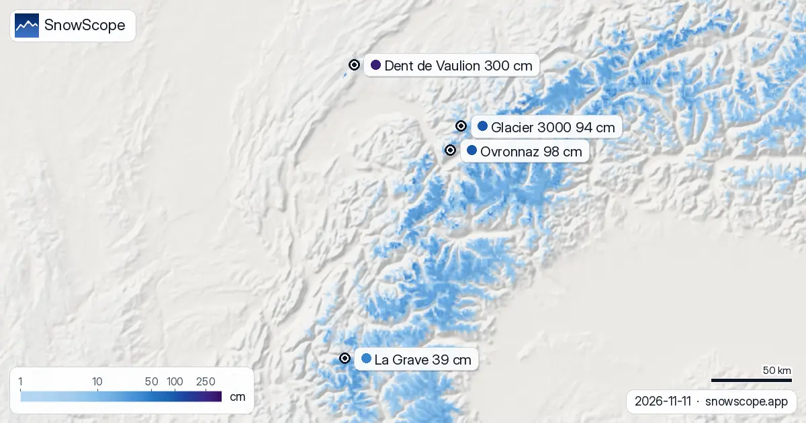

51,50 EUR pour skier début décembre dans la station d'altitude de Livigno
51,50 EUR est le prix journalier d'un forfait adulte à Livigno pendant la période promotionnelle de début décembre. Ce petit prix dure jusqu'au 18 décembre 2026 et c'est la meilleure façon de skier dans cette haute vallée italienne avec un budget limité. Vous pouvez profiter de 83 km de pistes pour un coût bien inférieur si vous y allez avant l'arrivée des foules de Noël.
Consultez les prévisions neige en temps réel pour Livigno sur l'application SnowScopeHauteurs de neige, alertes poudreuse et carte 3D, gratuitement.Petits prix avant l'affluence de Noël
Skier en début de saison est un moyen intelligent d'économiser de l'argent si vous savez où aller. À Livigno, le site officiel propose un forfait adulte 1 jour à 51,50 EUR pendant la période promotionnelle du 28 novembre au 18 décembre 2026. C'est une excellente affaire pour un domaine skiable qui compte 37 remontées mécaniques et un dénivelé de 979 m. Si vous restez une semaine complète, le forfait adulte 6 jours coûte 258,50 EUR pendant cette même période.
Le village se situe à 1 811 m, ce qui est assez haut pour les Alpes. Cette altitude aide à garder l'air froid et la neige sèche même au début de l'hiver. Comme la remontée la plus basse commence à 1 811 m, vous n'avez pas autant à vous soucier de la pluie à basse altitude que dans d'autres stations. Pour un skieur économe, ces trois semaines de décembre offrent le meilleur équilibre entre un prix bas et l'accès à un grand domaine montagneux.

Attentes en matière de neige début décembre
L'épaisseur de neige varie selon la partie de la montagne où vous skiez. Au sommet des remontées à 2 791 m, notre historique de neige montre qu'il y a 30 cm ou plus de neige dans 93 % des hivers passés pendant la première semaine de décembre. À la troisième semaine, du 15 au 21 décembre, ce chiffre atteint 100 % des hivers passés. Cela fait du sommet de la montagne un pari très sûr pour les virages de début de saison.
Le milieu de la montagne à 2 301 m a aussi de bonnes chances pour les premières semaines. Durant la première semaine de décembre, il y a 30 cm ou plus de neige dans 57 % des hivers passés. Cela s'améliore à 85 % des hivers passés vers le milieu du mois. Le 13 novembre 2026, l'épaisseur de neige actuelle est de 1 cm à la base et 2 cm au sommet. Les prévisions sur deux semaines suggèrent qu'une fourchette de 12 cm à 26 cm de neige nouvelle arrive sur les pentes supérieures.
La base de la station à 1 811 m est souvent moins enneigée début décembre. En décembre habituel, l'épaisseur à la base est de 28 cm. Pendant la première semaine du mois, il y a 30 cm ou plus de neige dans seulement 30 % des hivers passés. C'est pourquoi il est préférable de concentrer votre ski sur les pistes plus hautes où le domaine skiable atteint jusqu'à 2 791 m. La neige dure généralement de fin octobre en bas et de fin septembre au sommet.
Comment les prix changent fin décembre
Si vous attendez plus tard dans le mois, les prix augmentent considérablement. Du 19 au 25 décembre 2026, le forfait adulte 1 jour passe à 66,00 EUR. Bien que les chances de neige à la base s'améliorent à 57 % pour 30 cm ou plus la dernière semaine du mois, le coût supplémentaire pourrait ne pas en valoir la peine pour un voyageur au budget serré.
Les prix les plus élevés commencent le 26 décembre 2026 pour la haute saison. Un forfait adulte 1 jour coûte alors 74,50 EUR. Pour comparer, l'épaisseur habituelle au 15 décembre est de 81 cm au sommet et 45 cm à mi-montagne. Bien que la neige soit plus profonde, vous payez beaucoup plus pour les mêmes 83 km de pistes. Rester dans la fenêtre promotionnelle qui se termine le 18 décembre est le meilleur moyen de limiter vos dépenses.
Comparaison de Livigno avec Pontedilegno-Tonale
Il est utile de regarder d'autres options comme Pontedilegno-Tonale. Cette station a une base beaucoup plus basse à 1 120 m, ce qui signifie que le bas de la montagne est souvent beaucoup moins enneigé. En décembre habituel, la base à Pontedilegno-Tonale n'a que 17 cm de neige le 15 décembre. En revanche, Livigno a 27 cm à sa base à la même date. Livigno a aussi plus de pistes, avec 83 km contre 56 km à Pontedilegno-Tonale.
Cependant, Pontedilegno-Tonale a une station supérieure plus haute à 2 993 m. Cette hauteur lui donne une épaisseur habituelle en décembre de 101 cm au sommet, ce qui est plus que les 85 cm d'épaisseur habituelle au sommet de Livigno. Nous n'avons pas vérifié les prix pour Pontedilegno-Tonale sur le site officiel, donc nous ne pouvons pas comparer les coûts. Pour un skieur axé sur le prix le plus bas, l'offre à 51,50 EUR à Livigno est un choix solide et confirmé.
Tendances d'enneigement à long terme dans la vallée
Notre historique de neige de 46 hivers passés montre que décembre devient en fait plus enneigé à Livigno. À mi-montagne, la moyenne de décembre était de 39 cm pendant les 15 premiers hivers entre 1980-81 et 1994-95. Lors des 15 derniers hivers entre 2011-12 et 2025-26, cette moyenne est montée à 52 cm. C'est un signe positif pour les gens qui aiment skier tôt dans la saison.
Le sommet des remontées a connu une augmentation encore plus grande. L'épaisseur moyenne de décembre est passée de 59 cm lors des 15 premiers hivers à 92 cm lors des 15 derniers hivers. Même si l'hiver dernier a été peu enneigé avec une moyenne de décembre de seulement 12 cm à la base, la tendance à long terme est forte. Le mois de décembre le moins enneigé au sommet a été en 2024-25 avec 37 cm, ce qui est encore suffisant pour couvrir les rochers sur les pistes hautes.
Conseils aux skieurs
- Réservez votre forfait sur le site officiel avant le 18 décembre pour garantir le prix promotionnel de 51,50 EUR.
- Visez la semaine du 15 au 21 décembre pour avoir 100 % de chances de trouver au moins 30 cm de neige au sommet de la montagne.
- Concentrez votre ski sur les pistes au-dessus de mi-montagne à 2 301 m où la neige est plus fiable début décembre.
- Vérifiez la bulletin d'avalanche avant de skier hors-piste, surtout si la nouvelle neige atteint la fourchette de prévision de 26 cm.
Autres cartes (sites externes)
Références et crédits
- Livigno, official ski pass price list 2026-27 (PDF) www.livigno.eu/hubfs/tariffe_26-27.pdf
- SnowScope, December snow at three heights and today's snow map snowscope.app/
À propos de ces chiffres
Chiffres de neige : historique SnowScope, 46 hivers passés (1980-81 à 2025-26) à trois altitudes de chaque station (un modèle du passé corrigé de l'altitude : une estimation pour une zone, pas des mesures de la station) ; chiffres de décembre calculés à partir des hauteurs quotidiennes de ces hivers. Neige actuelle et tendance à deux semaines : prévisions SnowScope (tendance ECMWF et GFS, une fourchette, pas une promesse). Remontées et pistes : cartographie OpenSkiMap. Prix : pages officielles des stations ci-dessous, lues le 2026-11-13 ; les prix peuvent changer, vérifiez avant de réserver.
Bulletins d'avalanche officiels: AINEVA – Associazione Interregionale Neve e Valanghe
Citer ce bulletin
Pour la recherche, l'enseignement ou la presse : chiffres et graphiques réutilisables librement sous CC BY 4.0 avec cette citation.
SnowScope (2026), 51,50 EUR pour skier début décembre dans la station d'altitude de Livigno, https://snowscope.app/blog/fr/2026/11/livigno-december-ski-promo-price-snow-odds-2026.html, consulté le 2026-11-14
SnowScope (Atlas Labs). (2026, November 14). 51,50 EUR pour skier début décembre dans la station d'altitude de Livigno. SnowScope snow reports. https://snowscope.app/blog/fr/2026/11/livigno-december-ski-promo-price-snow-odds-2026.html
BibTeX
@misc{snowscope2026livignodecemberskipromop,
author = {{SnowScope (Atlas Labs)}},
title = {51,50 EUR pour skier début décembre dans la station d'altitude de Livigno},
year = {2026},
month = nov,
howpublished = {\url{https://snowscope.app/blog/fr/2026/11/livigno-december-ski-promo-price-snow-odds-2026.html}},
note = {Published 2026-11-14 13:29 UTC; accessed 2026-11-14}
}· CC BY 4.0 · Méthodes, données et outils →
Livigno : neige et température selon l'altitude, cet hiver vs l'hiver dernier (outils) →
Suivre Livigno
Gratuit : un message quand la neige arrive, et la météo chaque matin.
Autres bulletins neige

À 1 308 m à Dent de Vaulion, les 0 cm du jour dépassent ce que cette date a donné lors de 34 des 46 hivers passés (habituel : 0 cm) : une bonne …

Bulletin neige dans les Alpes, 11 novembre. Trois données, une sélection : la hauteur de neige du jour, la neige fraîche des 72 dernières heures et …

Sur 46 hivers, les stations du versant italien et des Alpes du Sud françaises ont connu 24 fois un hiver relativement plus généreux que le versant nord. Le graphique, les grandes années et la météo qui les explique.